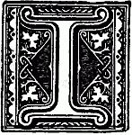

Steventon, Thursday (January 16, 1796).
HAVE just received yours and Mary's letter, and I thank you both, though their contents might have been more agreeable. I do not at all expect to see you on Tuesday, since matters have fallen out so unpleasantly; and if you are not able to return till after that day, it will hardly be possible for us to send for you before Saturday, though for my own part I care so little about the ball that it would be no sacrifice to me to give it up for the sake of seeing you two days earlier. We are extremely sorry for poor Eliza's illness. I trust, however, that she has continued to recover since you wrote, and that you will none of you be the worse for your attendance on her. What a good-for-nothing fellow Charles is to bespeak the stockings! I hope he will be too hot all the rest of his life for it!
I sent you a letter yesterday to Ibthorp, which I suppose you will not receive at Kintbury. It was not very long or very witty, and therefore if you never receive it, it does not much signify. I wrote principally to tell you that the Coopers were arrived and in good health. The little boy is very like Dr. Cooper, and the little girl is to resemble Jane, they say.
Our party to Ashe to-morrow night will consist of Edward Cooper, James (for a ball is nothing without him), Buller, who is now staying with us, and I. I look forward with great impatience to it, as I rather expect to receive an offer from my friend in the course of the evening. I shall refuse him, however, unless he promises to give away his white coat.
I am very much flattered by your commendation of my last letter, for I write only for fame, and without any view to pecuniary emolument.
Edward is gone to spend the day with his friend, John Lyford, and does not return till to-morrow. Anna is now here; she came up in her chaise to spend the day with her young cousins, but she does not much take to them or to anything about them, except Caroline's spinning-wheel. I am very glad to find from Mary that Mr. and Mrs. Fowle are pleased with you. I hope you will continue to give satisfaction.